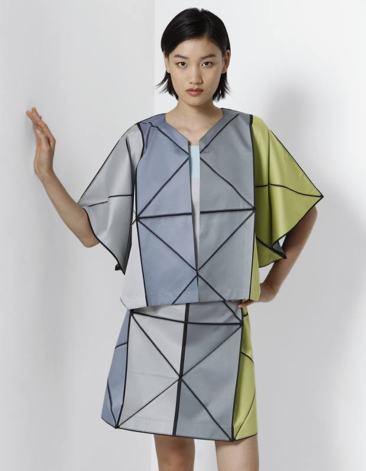

Socilogy
by Tamara Melcher
What does that mean?
The possibility to wear what we want is for the most a kind of freedom, but that way you automatically get associated to group.
There so many groups all around the world. Too much to count all of them right here.
By these associations are most the women more affected than men.
Because if a woman wears short skirt, everybody says she is cheap and a slut.
But who cares if a man wears a very short trouser?
Sometimes we also want adapt ourselves to our generation and the style of it, to delimit us from the older ones.
I also have to say that most of these associations happen by teenagers.
But as always money takes a very important part in this associations.
Because the ones who have more money than others will delimit themselves, because they think they are better because they have more branded clothes than others.
Even when it is not true.
Influence
Most people buy something they see, which most of the people around them wear. They let themselves get influenced by others even if they do not really think that that looks good they just want to belong to other people.
Of course, social media and ad have an important role. Because if Kylie Jenner says that maxi skirts look stupid most of the would not even think about it to buy one ever again.
Groups
There are two main groups:
the conservatively shaped group and
the experiment-friendly, rebellious and individualistic group

The individualistic group apply new fashion faster than the other group, because they want to stand out from the mass.
This group wants to represent their personality by their clothes. they want to delimit themselves from others.
Mostly these people are teenagers who want to find out their own style without the influence from their parents.
We also want to delimit us from the older ones, to delimit us externally. To show different generation, different style.
But also, the conservatively shaped group applies with the time the new style, but not because they really want a new style it is because they want to “compete”.
But as soon as this happens these fashions are not very interesting, anymore, for the individualistic group.
Comments